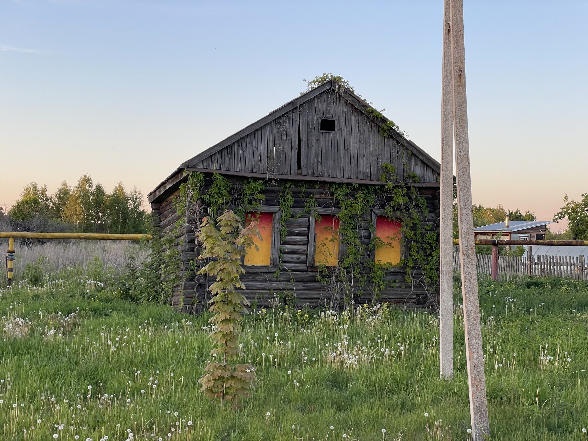
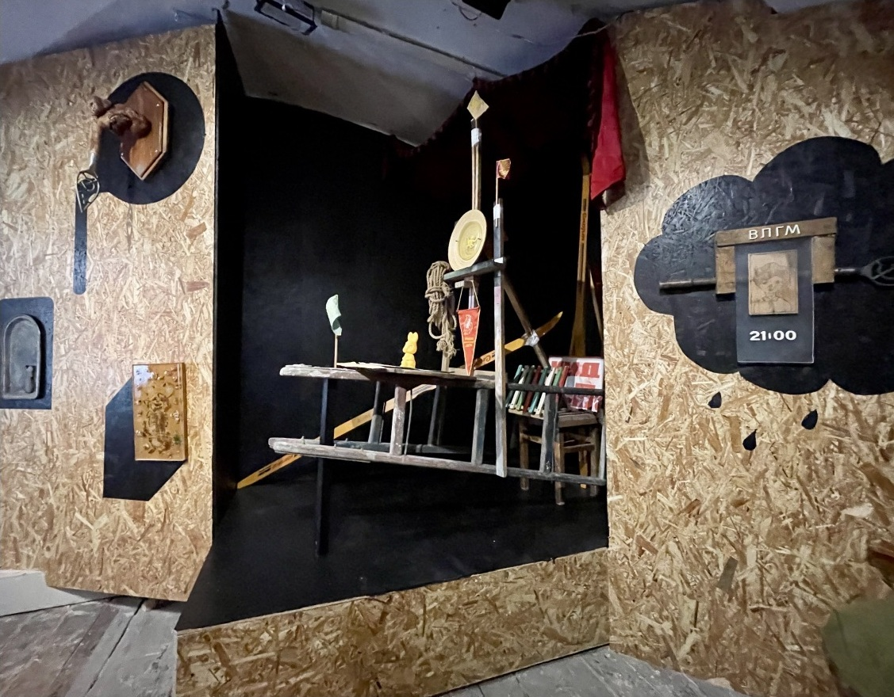
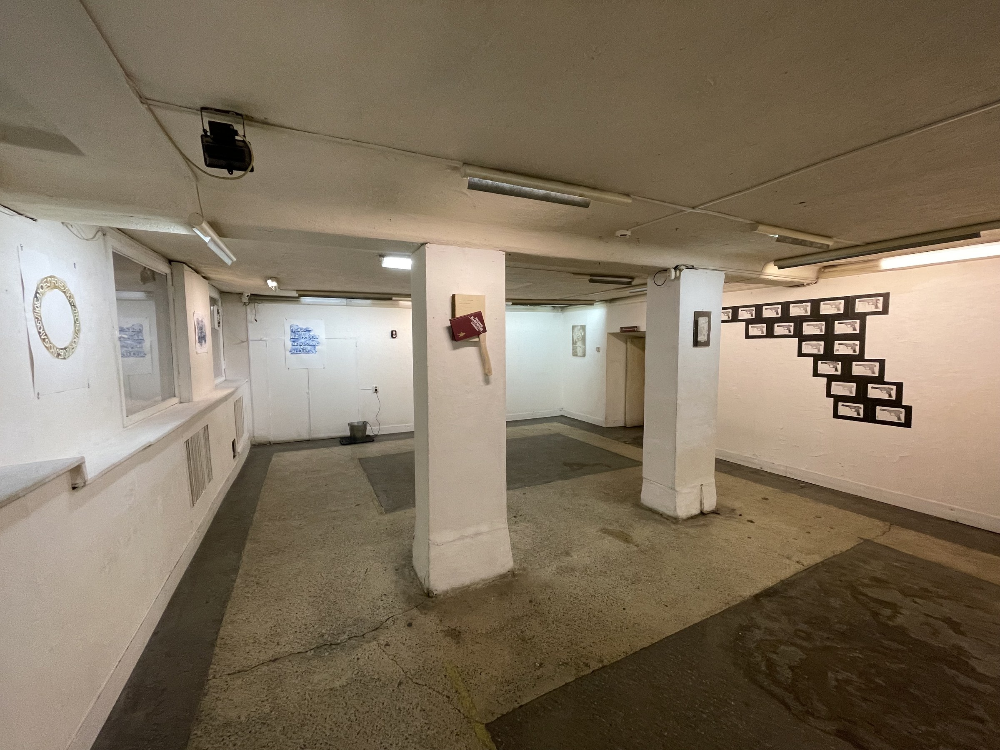
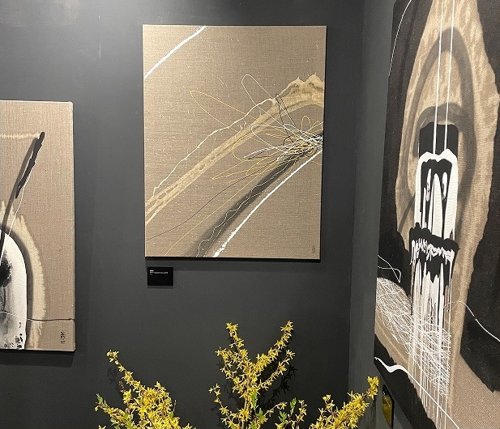
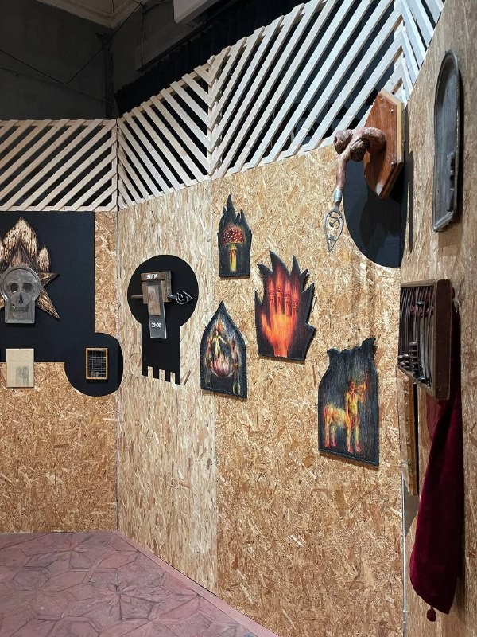
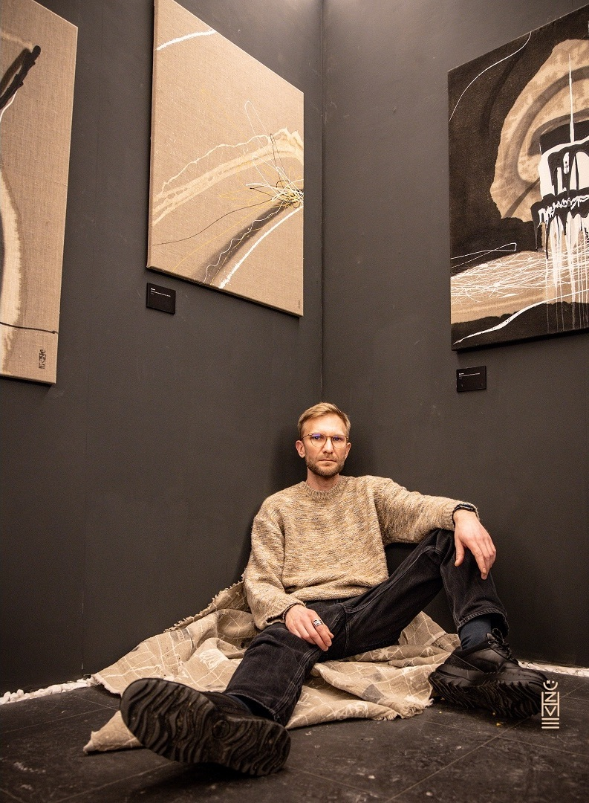

Дом №40
Site-specific проект / Менчаково
Заброшенная изба становится местом воображаемого ритуала. Жёлто-красные щиты в окнах изображают свет, заполняющий дом изнутри.
Художник из Санкт-Петербурга. Работаю с живописью, графикой, объектами и инсталляциями. Сооснователь галереи «Мося».
Объекты, архив, видео / 2026
Произведения, которые я решил не сохранять, становятся углеродным материалом. Колба, фотография и описание сохраняют след их существования.
О проекте
Site-specific проект / Менчаково
Заброшенная изба становится местом воображаемого ритуала. Жёлто-красные щиты в окнах изображают свет, заполняющий дом изнутри.
Инсталляция / 2026
Двадцать картонных лестниц парят под куполом Левашовского хлебозавода. Инсталляция стала частью презентации книги Глеба Ершова.

Персональная выставка / 2025
Найденные в заброшенном пионерском лагере предметы получают новую жизнь. Проект соединяет память места, пирографию, рисунок и объекты.

Объекты, графика / 2024
Книжные страницы, обложки и найденные предметы переводят поэзию Маяковского в материальную форму.

Живопись / 2024
Границы между абстрактным и фигуративным, светом и тенью. Негрунтованный холст, вытравка, пирография и аэрозоль.

Холст, вытравка хлором, акрил, аэрозоль / 100 × 80 см
Дерево, навершие знамени СССР
Обложка книги В. В. Маяковского «Избранное», 1985, топорище, дерево / 21 × 50 см
Холст, масло, аэрозоль / 200 × 100 см
Холст, вышивка, вытравка, акрил, аэрозоль / 80 × 80 см
Соавтор: Анастасия Иваненкова
Дерево, пирография, холст, хлор, лак / 60 × 114 см
Холст, вытравка хлором, акрил, аэрозоль / 100 × 80 см
Бумага на фанере, гелевая и шариковые ручки, папье-маше / 38 × 56 см
Мне интересно, что происходит с вещью, когда она перестаёт выполнять привычную роль. Книга становится топором, бумажная лестница обещает невозможный подъём, а уничтоженная работа продолжает существовать в архиве. Я меняю контекст знакомых предметов и образов, чтобы обнаружить в них другую историю — иногда тревожную, иногда ироничную.
Константин Ужве родился в 1983 году. Живёт и работает в Санкт-Петербурге. Член Санкт-Петербургского Союза художников, секция графики.
Работает с живописью, графикой, объектами и инсталляциями.
Сооснователь галереи «Мося», открывшейся в Санкт-Петербурге в 2025 году.

Я работаю с живописью, графикой, объектами и инсталляцией. Меня занимает, как возникают привычные представления о вещах и насколько легко их нарушить. Что заставляет нас видеть в предмете инструмент, памятник, мусор или произведение искусства? Насколько это определяется самим предметом, а насколько — нашим опытом и обстоятельствами встречи с ним?
Отправной точкой для меня часто становится что-то уже существующее: найденная вещь, литературный текст, знакомый образ или конкретное место. Я обращаю внимание на детали, которые позволяют продолжить их историю иначе. Вещи из заброшенного пионерского лагеря становятся участниками новой экспозиции, поэзия получает предметную форму, а собственные работы — материалом для архива после уничтожения. В этих действиях есть и привязанность к прошлому, и желание пересмотреть то, что кажется заслуживающим сохранения.
В живописи и графике мне важна возможность работать с самой поверхностью: оставлять след, убирать изображение, менять его в процессе. Решение возникает не только до начала работы, но и во время неё.
Мне близки ирония и парадокс. Они позволяют говорить о серьёзном, сохраняя сомнение. Я хочу создавать ситуации, в которых знакомое вызывает замешательство: предмет узнаётся сразу, но понять, что теперь с ним делать и как к нему относиться, уже не так просто.
Выставки
и образование
Обзор Port Art Fair. Раздел о галерее «Мося» и Константине Ужве.
Анна Спирина. О независимых художественных пространствах, в том числе галерее «Мося».
Разговор с создателями независимых галерей. Константин Ужве — о «Мосе».
Елизавета Шикуля. Обзор ярмарки с рассказом художника о представленных работах.
Дарья Гладких. Материал о групповой выставке с участием Константина Ужве.
Материал об участниках маркета. Константин Ужве — о работах, созданных во время путешествия на Бали.
Мария Сербина. Проект Back to the Roots и рассказ Константина Ужве о своей работе.
Анонс презентации и мистерии «ЛЕСТВИЦА». Художник — Константин Ужве.
Карточка персональной выставки в галерее «Борей», Санкт-Петербург.
Пост о выставке, посвящённой «Облаку в штанах» Владимира Маяковского.
Пост об абстрактной живописи и персональной выставке Константина Ужве.
Сообщение о презентации проектов финалистов. Ссылка и дата предоставлены художником.
Видеообзор ярмарки Third Place Art Fair 2025.
Александр Дашевский. Кураторский текст к персональной выставке в Негосударственном Нерусском Музее.
Галерея «Мося» открылась в пространстве мастерской художников Ивана Химина и Константина Ужве в 2025 году.
Исторически проект связан с содружеством художников и музыкантов, а также одноимённым пространством F5, располагавшимся на Фонтанной улице, д. 5, объединявшем в себе художественные мастерские, музыкальный клуб, выставочные залы, бар и резиденцию.
Когда пришло время освобождать занимаемые помещения, но найти соответствующее по площади и удобству расположения пространство не удалось, организаторы решили рассредоточиться по нескольким локациям, но сохранить дружеские и организационные связи. Так появился клуб F5 на Никольской площади (ул. Римского-Корсакова, д. 39) и мастерская на Моисеенко.
Первоначально галерея мыслилась как аффилированная с московской галереей «Маня» — домашней галереей, курируемой Кириллом Ивановым, одним из резидентов F5, и Марией Тёсовой, — некая курица о двух головах «Маня и Мося». В планах было обмениваться выставками между СПб и Мск.
К сожалению, в виде тандема проект просуществовал недолго — после первой выставки из-за организационных разногласий было принято решение развиваться самостоятельно.
Поскольку «Мося» располагается в рабочем пространстве мастерской, выставочная деятельность предполагает нерегулярную периодичность и ограничивается двумя днями экспонирования.
Если говорить о жанровых предпочтениях, то это инсталляция — тотальная, сайт-специфичная и беспощадная — та область современного искусства, которая в силу сложности монетизации в последнее время часто оказывается невостребованной галереями либо выполняет прикладную функцию экспозиционного дизайна.
Галерея открылась выставкой художника из Липецка Павла Зуданова «Одна из попыток предвидеть апокалипсис» — тотальной инсталляцией, центральной частью которой была надувная скульптура — основной медиум, с которым работает автор.
Затем последовали выставки Петра Белого «Плач», Кирилла Кто «Ещё раз то же самое, но немного другое», Андрея Кузьмина «Внутреннее государство».
В ближайших планах — проект Андрея Рудьева «Afterparty» — завершающая часть выставочной трилогии, задействующей также галереи Navicula Artis и «Борей».
В чуть более далёкой перспективе — приуроченная к Пасхе выставка Павла Брата, затем — коллаборация художников Анатолия Павлова, Кирилла Или и Нестора Энгельке.